| Home / Dive Resorts / Live-Aboards / Snorkeling / Who We Are / Book a Trip |
© Copyright U.S. Dive Travel Network.
[ Call for special large-group rates -- 952-953-4124. ]
*************************************************************
All package in this 3-star resort include beach-front suites or simple standard rooms + 3 delicious Indonesian meals daily + round-trip transfers 50 km from Manado Airport across the Minahasa Peninsula to Lembeh Straits + local sales tax & service fees. A standard 7% tariff is also added.
*************************************************************
INDONESIA SCUBA DIVING & INDONESIA SNORKELING VACATION PRICES for standard rooms in TRADITIONAL HOUSE LODGING:
************************************************
Please include a 7% USDT admin tariff per client for all North Sulawesi Dive Package bookings.
************************************************
Kungkungan Bay Resort is an mid-upscale, comfortably elegant dive resort set in an old coconut plantation on the leeward side of North Sulawesi island. You know, that�s the weirdly gnarled isle with a shape like some windblown bonsai tree or a �Special K� cereal logo, located smack dab in the center of the sweeping Indonesian archipelago. Kungkungan Bay is part of the Lembeh Strait, which many dive guides in this country consider one of the finest macro-photography & critter diving destinations on this shrinking planet. The resort staff likes to say, �We're so sure you'll locate what you're looking for here, that if you can't find your favorite ocean critter here, it probably doesn't exist!� Now that's confidence.
Before we get to describing the many charms & exploratory possibilities of Kungkungan Bay Resort, & the surrounding island of Sulawesi, it�s best that we address a worry that many clients express to us by phone & e-mail. �With the political situation as unstable as it is today in Jakarta, is it really safe for us to travel to Sulawesi; & are we taking unnecessary risks with our personal safety, not to mention our pocketbooks, by booking this Indonesia trip?�
The answer, we�re happy to report, is a resounding �NO!� for three very good reasons; & these are reasons confirmed by our agents & clients, who have visited the Northern Sulawesi Peninsula several times on lengthy dive tours since late 1995:
1. Indonesia is a vast archipelago, comprising more than 17,000 separate islands, & stretching several thousand miles from West to East, as it sprawls colorfully across the southern Indo-Pacific Ocean. The key fact here is that Jakarta, Indonesia�s capital city & nerve center of the troubled Java Island, is more than 2,000 miles west of Sulawesi, & thus it�s safely removed from Sulawesi Island�s easygoing life rhythms. Thus, the politics, the chaos & jittery-nerve vibes of Java (all coffee puns intended) are so far away from the Northern Sulawesi Peninsula, that they really have little or no impact whatsoever on the gentle way of life here. Minahasa Peninsula diving, the pearl of Indonesia diving, is not to be missed for socio-political reasons -- this is certain.
2. Each island has its own cultural ethos, or spirit of the people, as the Greeks would say. And for centuries, merchant seamen & explorers & tourists alike have found the people of Sulawesi to be uncommonly sweet-spirited, gracious, relaxed & very easygoing. Manado is a relatively prosperous city, compared to many regions of Indonesia; & the northern peninsula offers a healthy lifestyle for many of its people, albeit decidedly Third World by West Coast standards. So there�s a discernible absence of that edgy, gritty city feeling you get in Jakarta, where the politics are all haywire & banks have been failing with the shelf-life of Russian political promises.
3. Finally, there�s the added security measure that we have established a warm & cordial business relationship with the good folks who manage reservations for Kungkungan Bay Resort; & we are able to route your funds safely through stateside banks instead of mailing it directly to Indonesia, which is never a good bet. You don't manhandle rockfish & you don't send anything of value through the Indonesian post.
*****************************************
Michael R. Goodman of Hopkinton, MA is a good friend of ours who has shared some exceptional underwater images from his recent dive trip. A longtime globetrotter who's visited many exotic nations around the world, Mike "The Master Enthusiast," as we like to call him, spends countless hours pursuing his passion of underwater photography; & the hard work pays off. He has refined a keen eye for this difficult artform. Mike uses a Nikonos camera for his wide-angle shots & a Sea & Sea housed Nikon for his macro shots & fish portraits. Michael R. Goodman has won numerous awards for his land-based photos, as well, including the Boston Globe's Annual Photography Contest, & various photographic salons for the Photographic Society of America. His images have been published in books, calendars & music albums. Mike is a past president of the Boston Camera Club; he has judged international competitions & has taught photography. A guy whose sense of humor is as sharp as his travel judgment, Michael supports his photographic habit (& his family!) by working as an international management consultant.
HERE are some soul-candy MICHAEL GOODMAN PHOTOS from the LEMBEH STRAITS !
|
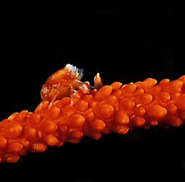 |
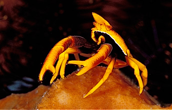 |
|
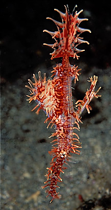 |
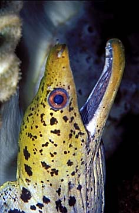 |
|
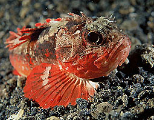 |
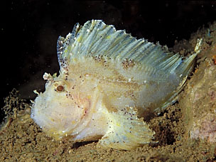 |
*****************************************
Now, because we deal in real-world travel products & not the advertising-tainted & illusory bull-feathers of some diving magazines, no place in the world is perfect; no place is a problem-free Shangri-La, except those mystical places we imagine in our diving pipedreams. There are a few burrs in the saddle on Sulawesi as well, & in Kungkungan Bay as well. But they are nothing to write home to Mom about, & certainly no reason to stay away, we feel. Our agents report that the visibility is much better on the western side of the peninsula. But that�s really OK, because the bottom sediment & plankton blooms that create this �viz� differential also are among the prime reasons why life forms are so riotously beautiful in the Lembeh Strait region.
The scuba diving �viz� in Kungkungan Bay, our agent scouts confirm, is not super-high, but the creature count, especially the bizarre & exotic biota count, is off the scale in beauty & numbers. Some of the diving world�s oddest & rarest small creatures are flitting about these corals, just ripe for the quick eye & the quicker shutter. Much like the diving environment along the southern shores of Papua New Guinea, the water might have a bit of sediment in it, most seasons, but that�s part of the nutrient-rich ambience that breeds so many fascinating & delicate marine animals, plus corals as lush as Ringo�s Octupus� Garden. Our agents found this place utterly beautiful, restful & alluring. We recommend it with enthusiasm.
Kungkungan Bay Resort is situated on the site of a former coconut plantation on the Sulawesi coast of Lembeh Strait. Located on the sunrise side of the Minahasa Peninsula, the resort overlooks rugged Lembeh Island & the smaller Sarena Island Group. �We enjoy a mild tropical climate with gentle ocean breezes all year,� resort staffers indicate. Temperatures are generally in the mid-80�s during the day & in the 70�s at night.
Kungkungan Bay Resort was designed with a guiding thought in mind � to preserve the traditional Minahasa Peninsula architecture & Old World charm of a bygone era. The resort�s eight cottage suites & six traditional houses have just the right blend of Asiatic & Western architectural flavors. The amenities are quite comfortable, even fancy in some quarters, & the English-speaking staff is well-trained to serve guests with aplomb.
Kungkungan Bay Resort offers a fine restaurant & attractive office
complex that is centrally located, actually constructed to hunch right
over the water, which affords you some stunning views of Lembeh Strait.
The restaurant menu features Western & Indonesian cuisine, with ample
vegetarian options also available.
So there's more to this place than prime Sulawesi diving. Plus you can drive to
Manado in a short hop & enjoy the city lights some evening, if the mood demands it.
UNDERWATER PHOTO SEMINAR for
www.microcosm-books.com/html/ReefFishes.html
MACRO-PHOTO BUFFS. CHECK THIS OUT:
Now here's some significant good news for underwater critter-photographers.
Noted naturalist-author & underwater photographer Scott W. Michael will
be conducting special courses on coral reef fishes periodically at Kungkungan Bay Resort.
Call us to match his schedule with your visit. Presentations by Mr. Michael
will concentrate on the identification & behavioral ecology of reef fishes,
with special emphasis on the species found on coral reefs around Kungkungan
Bay Resort. The author/photographer also promises to share tips on how to
sharpen your fish photography skills. Mr. Michael is the author of Reef Sharks
and Rays of the World (Sea Challengers, 1993) and Reef Fishes, Volume 1
(Microcosm, 1998). You can locate these information-packed texts on
the Web by plugging this URL into your Netscape or Explorer browser:
Kungkungan Bay Resort offers some of the world's best small-critter scuba diving delights. Also, there are three WWII shipwrecks nearby & one sunken Taiwanese fishing vessel to cavort upon when the underwater yen pulls firmly. All wrecks are easily dived & overgrown with visually arresting corals & assorted marine animals. Scuba newbies & seasoned experts alike will all find something fun to do underwater, here at Kungkungan Bay Resort.
The resort�s scuba crew states that, �our dive staff is the absolute best in North Sulawesi for finding the unique animals that make diving in Lembeh Strait -- & in particular Lembeh Strait diving -- so special. Kungkungan Bay Resort divemasters like to do three boat dives a day with optional boat night dives. Beach diving on our excellent house reef is always an option. Water temperatures are generally between 76 - 82º F. The sheltered conditions of Lembeh Strait make it ideal for year-round diving. We have three fast boats that whisk divers to any of over 29 dive sites in less than fifteen minutes. Each boat takes a maximum of eight divers, so there's never any overcrowding.� That seems a pretty firm commitment to quality, & a commitment to avoiding the big bane of all vacation divers � that dreaded cattle-boat feeling. None of that here in the world of Sulawesi diving.
Kungkungan Bay Resort�s data pack also confirms the following, & we quote with gusto: �Our boats are roomy enough to hold underwater photography equipment & our staff is trained in proper camera & equipment handling. Photographers: We have daily E-6 slide processing at Kungkungan Bay & print processing is available in Bitung. Kungkungan Bay Dive Center has ample fresh water rinse tanks, a good supply of rental equipment & aluminum 80-cubic-foot tanks. We also have a separate camera room with individual work stations & storage areas. Our strobe-charging stations are equipped with 110V & 220V power.� What more can a diver ask for, except an ironclad written guarantee of daily 16-foot manta ray piggyback rides?! Sorry, we�re just joshing about THAT one!
Kungkungan Bay Resort has crackerjack diving guides who know where & when to bring you to the best & brightest critter activity. They will gladly show you ghost pipefishes, pipehorses, stargazers, eels, snake eels, sea moths, pygmy seahorses regular garden variety seahorses, sea robins, quirky little frogfishes, millions of fluttering flashing gobies, funny-as-heck pufferfishes, leaf fishes, waspfishes, mincing little shrimps, squids, big & little cuttlefishes, mandarin fish, scorpionfishes, lionfishes, jawfishes, comet fish, blue-ringed, mimic & other octopuses (careful now!), & a genuinely odd assortment of mollusks, nudibranchs (our favorites!), crabs galore, gnarly writhing worms & many other critters that have yet to be discovered. Indonesia diving is creature-intensive & stress-reductive.
This Manado, Sulawesi region is the species melting pot of the Indo-Pacific, &
you really have to see it to appreciate the explosive & majestic diversity
of underwater life, despite the so-so viz. But that viz quotient
is the Real World price for such overwhelming biological diversity.
That�s just the way God made these reefs, from Day One, & it�s a pretty
unique caldron of life. Even a little intrigued by the Manado, Sulawesi area &
Indonesia diving yet?
MORE DANDY EYE-CANDY PIX by MICHAEL GOODMAN, from the LEMBEH STRAITS !
|
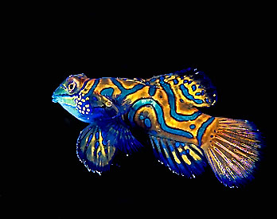 |
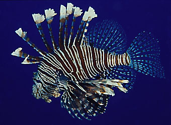 |
|
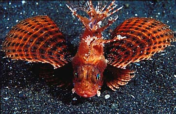 |
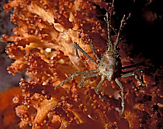 |
|
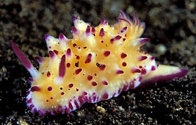 |
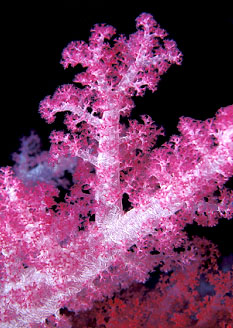 |
Kungkungan Bay Resort is fairly easy to reach. Just easy enough to make this trip essentially hassle-free, but far enough off the beaten path to discourage the yammering masses that crowd some islands during high season. Kungkungan Bay Resort is a one-hour drive from North Sulawesi's Manado International Airport. International connections are best made by flying on Silk Air from Singapore. Silk Air has non-stop flights from Singapore to Manado & back on Tuesday & Saturday. If you are connecting through Bali or Jakarta in Indonesia, Garuda Airlines has daily flights into Manado via Ujung Pandang. Another option is this: Bouraq Airlines has two roundtrip flights every week from Manado to Davao, Philippines.
There are many pulse-lifting side tours you can take when you stay at Kungkungan Bay Resort. Scuba divers around the world are most familiar with the famous (& justifiably so) Bunaken National Marine Park, which is an astonishingly vivid scuba diving destination. With dropoffs that crest atop 3,000-foot walls, spectacular & lush coral gardens, plus overwhelming abundance in its fish schools, Bunaken National Marine Park is situated on the opposite side of the North Sulawesi peninsula from Lembeh Strait. That�s a pretty easy hour�s drive away from Kungkungan, more or less, depending on rains & such. Combine a stay at Kungkungan Bay Resort with a stay at Manado's Nusantara Diving Centre, where the viz is awesome & the corals & critters just as beautiful, but in a very different way.
Kungkungan Bay Resort issues a data pack that points out this fact: that the Sangihe Islands, an �archipelago arranged like stepping stones to the Philippines,� are located at the edge of the "ring of fire" at the merger of the Sulawesi & Maluku Seas. Southeast Asia Live-Aboards runs 7- & 8-day dive cruises to these scenic islands that abound with pelagic fish life, prolific coral growth & extraordinarily clear waters. A dive on the underwater volcano is a singular experience not to be missed, the resort officials confirm. You also can traipse through local villages between dive sorties.
Kungkungan Bay Resort also points out that special rainforest tours are easily available for any persons who need to see some of the stellar flora & fauna in North Sulawesi. Tangkoko Nature Reserve, 90 minutes by vehicle from Kungkungan Bay Resort, has the world's largest concentration of black crested macaques & the world's smallest primate, the tarsier. Eye-candy treats include great flocks of hornbills & other tropical birds & also insects off strange & wonderful size & hue. These are easily viewed at Tangkoko Nature Reserve. Then there�s Dumoga Bone National Park, a five-hour drive from Kungkungan Bay Resort, which has decent tourist accommodations as well. Here at Dumoga, in addition to macaques, tarsiers & other tropical fauna, there is a good chance of viewing the babirusa, the famous pig deer with oddly-curly tusks, & the maleo bird. Which buries its enormous eggs in hot volcanic sand for safe & sound incubation.
As an added side-tour bonus, you always have the scintillating option of overnights, or even day tripping to Tangkoko Nature Reserve, with its nearby volcanos & plunging waterfalls. Then of course there�s the old redoubtable Manado, with the hurly-burly fish market in Bitung. What�s more, a cab or van trek to the North Sulawesi Highlands is relatively easy to arrange from Kungkungan Bay Resort. Traditional highland tours include visits to rice paddies, Tomohon (City of Flowers), Lake Tondano & its freshwater fish farms, exotic hill country farmer�s markets, a pottery village & ancient sarcophagi, which the good local folk revere, & they call them waruga. Shopping trips to Manado are a popular activity. Assorted easy-going day hikes to various local waterfalls & to the rim of local volcanos (not lava-spewing ones, so no worries at this date), will be a great way to get out & sample the local exotica of North & Central Sulawesi Island, one of the most fascinating isles in the world.
( NOTE: Parts of this text have been paraphrased by U.S. Dive
Travel, & derived from
copyrighted materials, supplied to us courtesy of the Kungkungan Bay
Resort. )
FOR MORE INFORMATION or RESERVATIONS:
Please feel free to contact:
John Hessburg, General Manager
Susan Hessburg, Operations Manager
U.S. DIVE TRAVEL Network
PMB 307 -- Suite # 116
15050 Cedar Avenue S.
St. Paul, MN, USA 55124-7047
Voice Mail: 952-953-4124
E-mail: divetrip@bitstream.net
Website: www.usdivetravel.com
******************************************************
IMPORTANT REMINDER about PRICES & TARIFFS:
All North Sulawesi dive package prices listed here are subject to possible change in this steadily evolving travel market. Lodging, side tour & diving prices are traditionally stable, while air prices can fluctuate daily. Until air tickets are issued, all airlines reserve the right to change airfares without notice -- an industry standard per FAA rules. We at U.S. Dive Travel will price-protect you to the utmost of our professional ability; & that has been our pledge for one decade now. Our tropical vacation experts, working on North Sulawesi dive vacations, normally secure excellent wholesale discount air tickets for all our clients who book early enough to secure limited seats in the best price categories. Remember please, the federal government has deregulated all U.S.-based airlines, so only they control their pricing -- not any travel professionals. Early is good when seeking the best air ticket rates for an Indonesia diving trip.
Please feel free to call our expert Indonesia vacation planners for any questions you may have about these key topics -- Kungkungan Bay Resort, Kunkungan Bay, Minahasa Peninsula, Indonesia vacations, North Sulawesi, North Sulawesi diving, North Sulawesi snorkeling, Indonesia diving package, Indonesia scuba diving vacations, Indonesia snorkeling vacation, Sulawesi diving trip, Sulawesi snorkeling, Lembeh Strait -- & we are happy to call you back as soon as possible.
Unless specifically noted, these above Indonesia scuba diving packages are prices for only the land-based portion of the dive resorts, in most cases reflecting double-occupancy rooms. At many dive resorts, there will be no triple-occupancy rooms offered. Some exceptions will be noted. International air tickets & commuter "island-hopper" seats are always extra above these land costs. Nominal service fees are also extra for air tickets & the vessel + side tour components. The baseline tariffs for all clients start at $55 per person for the land portion + $35 pp for the air tickets. Late-booking clients may receive slightly higher tariffs on the lodging + diving at many of our dive resorts.
The preferred payment mode for all of our dive resorts, dive tours & air ticket specials is by cashier's check or wire transfer in U.S. dollars. All clients living outside the USA or Canada will need to pay for their dive vacations via direct wire transfer only. No personal checks will be accepted for the land portion of any reservation. Thank you for your gracious understanding. Our service level is the highest & our prices the lowest in this industry, & thus we need to preserve a reasonable margin. For published-fare air ticket bookings, USDT always accepts Visa & Mastercard. For ultra-discount wholesale air tickets, USDT accepts only cashier's checks or wire transfers, please.
Remember, all tropical vacation clients, on all dive tours, to all foreign destinations will be asked by local officials overseas, upon departing the airport on your final day, to pay a nominal government departure tax, usually between USD $35 - $40 per client. USDT cannot collect this tax beforehand, so you simply pay it down there, in your host country. Be sure to stash away a little cash for this final moment at the airport, so you'll get your exit visa stamped quickly with no fuss; & away you go. Best of luck with your dive travel plans.
One more friendly reminder: please do not hesitate to phone our Indonesia dive vacation planners any time, at 952-953-4124, for more details about lodging, diving, air tix & fun cultural side tours related to any of these germane topics -- Minahasa Peninsula, Indonesia vacations, North Sulawesi, North Sulawesi diving, North Sulawesi snorkeling, Kungkungan Bay Resort, Kunkungan Bay, Indonesia diving, Indonesia scuba diving, Indonesia snorkeling, Sulawesi diving, Sulawesi snorkeling, Lembeh Strait.
We hope your scuba diving vacation is a safe & exceptionally satisfying adventure. Blessings & best wishes with ALL your dive vacations.Best fishes too!
>////*> <*\\\\<
John Hessburg & Susan Hessburg, Mgrs.
U.S. Dive Travel Network.
| Home / Dive Resorts / Live-Aboards / Snorkeling / Who We Are / Book a Trip |
© Copyright U.S. Dive Travel Network.